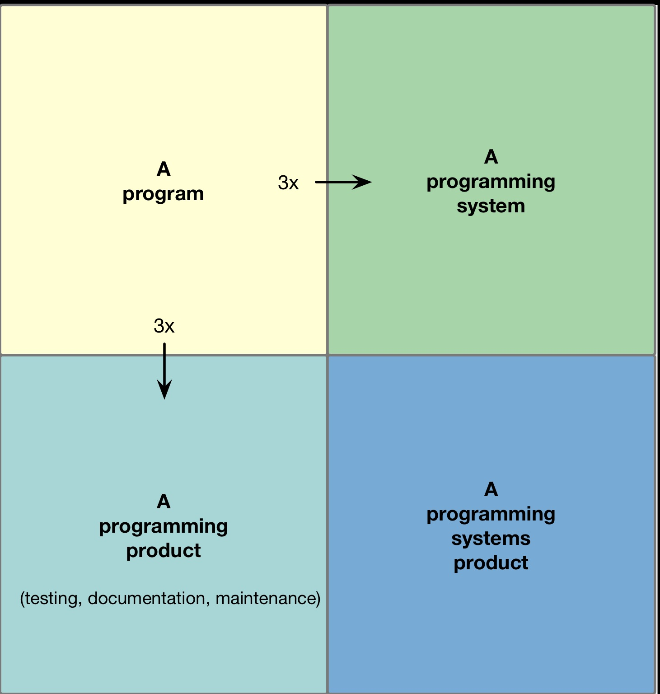
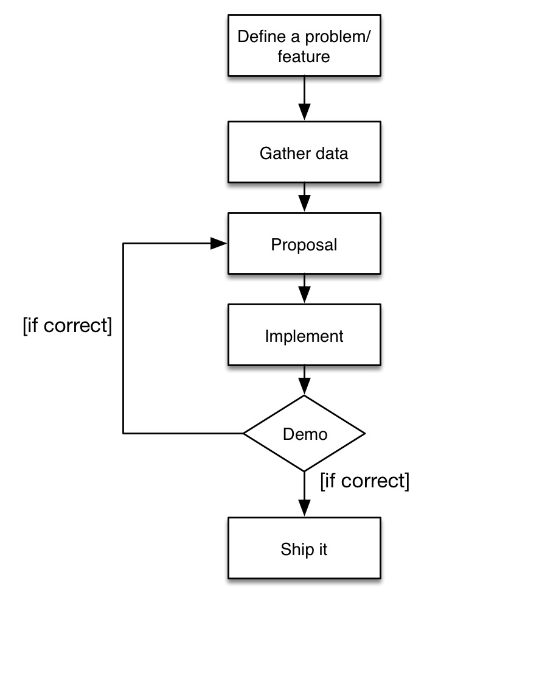

Software development methodologies
Created by Timoteo Ponce
Course remarks
Classes
Online course
Weekly progress
Once uploaded, watch it many times
Assignments
Assignments per week
Writing (English) will be required
Weekly remote-hangout
Final project
Marks
Class development
Assignments
Final project (no exams!!)
Fundamentals
If you want to go fast, go alone ...
If you want to go far, go together- African Proverb
To the moon
- 410'000 people
- Asynchronous parallel projects
- Orders of magnitude science progress
How do we build Software?
Reality
Chaotic
Code and fix
No planning
Short term decisions
Not scalable
Types of programs
What managers need
Conventions
Procedures
Policies
Define a repeatable process
What they need is a methodology
Method
Systematic/repeatable procedure, similar to a technique
Methodology
Any conventions and policies the team relies on to successfully deliver systems
Methodologies
Engineering methodologies
- Bureaucratic
- Resist to change
- Focus on planning
- Process oriented
Methodologies
Agile methodologies
- Just enough process
- Welcome to change
- Focus on reflection and adaptation
- People oriented
Summary
- Methodologies come from an management's perspective
- Civil engineering wrongly taken as basis
- Software engineering methodologies have little success
- Agile methodologies as alternative
Software methodologies
an empirical observation
What gets us into trouble is not what we don't know ...
It's what we know for sure that just ain't so- Mark Twain
We've talked a bit about software development, processes, methods, methodologies and people interactions
But from where we draw these conclusions?
Alistair Cockburn
Background
- IBM research lab, 2003
- 10 years doctoral research
- Real projects, different companies
- Interviewing managers and software builders
Research - questions
Do we need yet another software methodology, or can we expected a convergence?
If convergence, what must be the characteristics?
If no convergence, how can project teams deal with new methodologies?
How does the methodology relate to the people on the project?
Research - results
- A methodology is a formula describing conventions of interactions between roles
- People's personal characteristics place a limit on the effect of methodologies in general
- Every project requires a slightly different and flexible methodology
Research - results
Identified cycle of behavior of successful projects:- Project members define their interactions convention at the project's start
- Project members with the most success are the most adaptable
- They have periods of reflections in which they reconsider and adapt working conventions
Software construction is inherently a creative process
Interpretation
- People, their roles and the interaction with other roles is fundamental for the success of a project
- Each project has to define it's own method of working, even if there are similarities
- Continuous interaction, fast feedback, reflection and adaptability are the norm in successful teams
Scientific method
- Scientific method (384 BC)
- Empirical method for acquiring knowledge
Interpolation for software
Summary
- Software building is a creation process
- Different projects, different methodologies
- Creation processes and methodologies are a bad match
- Knowledge acquiring methods work better
Article - Self study
- Ask the software methodology questions from Cockburn's research in your work environment
- Gather the results and provide a summary on them
- Write an article (personal blog, LinkedIn) in ENGLISH describing your findings
- The article should contain at least 300 words
Engineering and Agile methodologies
You may be able to kick people to make them active, but not to make them creative, inventive, and thoughtful- Tom DeMarco
Engineering and Agile
- Agile methods are adaptative rather than predictive
- Agile methods are people-oriented rather than process-oriented
Predictive vs Adaptive
Separation of design and construction
Engineering disciplines rely on:- Planning before building
- Ahead decisions
- Predictable schedule and budget
Separate design from construction
Separation of design and construction
Agile disciplines rely on:- Creative process can't be planned
- Software construction is free
- Flexible scope for schedule and budget management
Design and construction are atomic
Unpredictable requirements
Common myths:- Changing requirements are due to bad req. gathering
- Requirements should be stable
- Estimations can be done from requirements
Proven to be wrong
Do predictable scenarios exist?
Yes
e.g. aviation, laws, bureaucracy
but such scenarios are not very common...
Working on unpredictable scenarios
Use knowledge gathering
combined with reflection
and adaptation
Adaptive customer
Customer engages in the creation process
Fixed scope instead of fixed price
Requirements validation is a must

Putting people first
People as components
- People is not replaceable, roles are
- People is not interchangeable without side-effects
- 'Most adaptive' instead of 'most suitable'
By focusing on people, process gets improved
People oriented process
Software development is an intellectual creative process
Processes are accepted, not imposed
Organization is defined, not imposed
The difficulty of measuring
Managers use measures
Internal metrics are useless, external metrics are better
We need adaptive managers as well
Business experts
Developers can't know everything
Customers involved can also mean experts-involved
Birth of the business analyst role
Self-Adaptive process
Processes change over time
Adaptivity is a must
Change is best done in time-boxes
Regular review/reflect processes lead to adaptations
Summary
- Adaptive processes are proven to be better
- Adaptive processes require different behaviors (customer, management, organization)
- People is central to the process
- Internal measures are useless
Agile development
Doing half of something is, essentially, doing nothing- Jeff Sutherland
Agile manifesto
Philosophy
Outlines fundamental principles
Created in 2001
Individuals and interactions over processes and tools
Working software over comprehensive documentation
Customer collaboration over contract negotiation
Responding to change over following a plan
Flavours of Agile
XP
Extreme ProgrammingValue-oriented methodology
Emphasis on testing and collaboration
Automation as first order tool
Scrum
Highly iterative framework
Emphasis on inspection and adaptation
Time-boxed approach
Crystal
Just-enough methodologies
Emphasis on reflective improvement and frequent delivery
Advocates for close communication
Unified process
Process framework
Emphasis on use-cases and object orientation
Uses modelling as design
Summary
- Agile manifesto
- Philosophy
- Brief description of approaches
Workshop: Marshmallow challenge
Scrum foundations
Agile
is a philosophy
meant as guidance
Scrum
is a framework
meant to be incomplete
Empiricism
Knowledge comes only, or primarily, from experience- Merrian-Webster
Empirically driven decisions
Based on what has occurred
Lagging indicators
Driven from historical metrics
Inspect
Inspect project and process
Look for variances
Strike the right balance
Adapt
Reduce waste, increase value
Introduce changes when needed
Adapt the process to serve the project
Transparency
Make your pace and progress visual
Encourage openness across the team
Share clear status across team boundaries
Scrum is a framework, not a process
Process
Step-by-step guidance
Repeatable from project to project
Framework
Definition of key tasks and routines
Non-descriptive
Your Scrum is not my Scrum
Scrum in simple terms
Roles - product owner
Roles - development team
Roles - scrum Master
How to start?
One by one

Summary
- Scrum is simple, hard to implement
- Scrum does not solve problems, makes them visible
- Implementation depends on context
Scrum patterns
A pattern is a repeatably applicable solution to a problem that arises in a specific context- Christopher Alexander
Each scrum component is a pattern
Each pattern has pre-conditions
Each pattern has expectations
Each pattern is extensible
This is my short list...
The vision
Examples
make natural, delicious food and drink that helps people live well and die old- Apron
to enable you to organize and prioritize your projects in a fun, flexible, and rewarding way- Trello
A vision should be
- unambiguous
- clear
- shared
- short
Product owner owns the Vision
Definition of done
Each team member may have a different understanding of "work completed"
Done is define by PO and Team collectively
Done should be objective and testable
Done should target product value, wasted effort should be avoided
Good practices
- Done is refined every sprint
- Done implies a potentially shippable product
- Done should be understood by end users
- Done must be verified by PO
Product owner
Get a Product Owner to take responsibility for the vision of the product, and for the value that emanates from the delivery of that vision
A product owner
- owns their products
- becomes a single point of contact
- is accountable for the results
Product owner traits
- Knows when to say 'no'
- Knows how to isolates contexts
- Knows finances/budgets
- Learns continuously
Development team
A development team
- is stable
- is autonomous
- is cross-functional
Development team traits
- Know how and whom to ask
- Know what they need to learn
- Embrace change
- Improve continuously
Scrum master
A scrum master
- Guides the process for the team
- Defends Scrum and its values
- Removes impediments for the team
Scrum master traits
- Discipline
- Responsibility
- Understands business context
Sprint
Time-boxed development interval
Recurring
Frequent
Fixed-length
Goals
- Short feedback loop
- Reduce rework
- Accomplish the sprint goal
- Generate regular product increment
Sprint planning
A sprint should produce Regular Product increment,
the team meets to plan how to create it during the sprint,
and to define a goal
Goals
- Inspect valuable work and adapt plan
- Collect lagging indicators
- Ability to explain how to reach sprint goal
Daily scrum
A short meeting to re-plan the sprint, to let people know about blocking problems that affect the chances to complete the sprint goal
Daily scrums should be
- Short
- Focused on the problems or impediments
- Re-plan the actions if needed
Benefits
- Reduces wated time
- Reinforces shared vision
- Promotes collaboration and knowledge sharing
- Provides insight on unknowns unknowns
Sprint review
Event to asses the status of the product and learn about end user needs, opportunities and problems
Sprint reviews should have
- presence of Team, PO and stakeholders
- the product standing on its own
- backlog items evaluated by PO following Done-definition
- assesment of the sprint goal
Benefits
- PO learns about product status and possible shipment
- Team learns gow well they met stakeholder expectations
- A chance to acknowledge what we've done
Sprint retrospective
Even the most gifted ones tend to fall into oblivion, a constant review of where we are and what have we done lightens the path for our destiny- Albus Percival Wulfric Brian Dumbledore
An event where the Team asses how it did its work during the Sprint
- What did we do well?
- What should we do better?
- What have we failed to do?
Remarks
There's always room for improvement
Is not always directly related to the product
Is always related to increase the value
It's a macro daily scrum